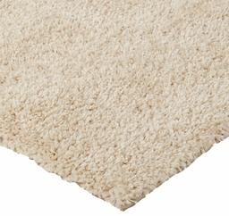

Nicolás Pavón
Clasificando imagenes de Amazon
El problema
En los últimos 20 años, el comercio electrónico ha crecido exponencialmente. Basta con observar el poder y el tamaño de sitios como Amazon, Alibaba o incluso Mercado Libre para darse cuenta de la importancia que tienen hoy en día. A partir de esto, podemos concluir que, si hay algo que tienen estos gigantes de la informática, es una enorme cantidad de datos, entre ellos, muchas imágenes. Sin embargo, los datos no sirven de nada si no se pueden interpretar y trabajar, por lo que es útil poder clasificarlos para darles un uso adecuado y sacarles todo el provecho posible.
Los datos
Entre todos los conjuntos de datos disponibles, nos topamos con uno interesante, el Amazon Berkeley Objects (ABO) Dataset. Este conjunto de datos nos proporciona imágenes de aproximadamente 147,000 productos de Amazon, con su correspondiente metadata, que incluye su categoría, color, palabras clave, marca, nombre, modelo, entre otros. Además, ofrece renders en 3D y algunos otros detalles interesantes. Si bien aún no hemos explorado los datos en profundidad para determinar su pureza, apreciamos el hecho de que provienen de Amazon, lo que hace que las imágenes sean ideales para este problema.
La tecnología
Si bien hoy en día suelen utilizarse los transformers para este tipo de problemas, en este caso utilizaremos redes convolucionales, partiendo de un modelo preentrenado como Inception-v3 y aplicando transfer learning, donde eliminaremos las capas superiores de clasificación y añadiremos nuevas capas especializadas para esta tarea. Por último, aplicaremos fine-tuning para mejorar el rendimiento. El código fue desarrollado en Google Colab.
El objetivo
Nuestro objetivo es clasificar el producto en la imagen, asumiendo que la imagen corresponde a un producto de comercio electrónico. Tomando esto en cuenta y analizando el conjunto de datos, observamos la propiedad product_type, la cual tiene alrededor de 574 clases que varían en nivel de precisión, desde "RING" hasta "BISS" (Business, Industrial, and Scientific Supplies). Partiremos de esta propiedad del conjunto de datos para entrenar nuestro modelo.
Informacion y estructura del dataset
Estructura del dataset
El conjunto de datos cuenta con
varios archivos para descargar, de los cuales nos interesan listings.tar (listado
de productos y metadata) e images-small.tar (catálogo de imágenes reescaladas a un
máximo de 256 píxeles).
El archivo listings.tar contiene 15 archivos
.json, cada uno con una lista de objetos, siendo cada objeto un producto de Amazon. Utilizaremos un script
para pasar la información relevante de estos objetos a archivos .csv, para que sean más cómodos de
trabajar. Los objetos tienen una serie de atributos, de los cuales nos interesarán item_id,
product_type, main_image_id y other_image_id
Atributos del dataset y estadisticas
Una vez que tenemos el archivo .csv inicial, procedemos a observar la distribución de las clases:

Dataset inicial
Como se ve en la imagen, el conjunto de datos está totalmente desbalanceado, con muchos ejemplos para ciertas categorías y casi ninguno en otras. Al observar los datos en detalle, vemos que hay 574 categorías, de las cuales 460 tienen menos de 100 ejemplos. Esto es un problema, ya que necesitamos una buena cantidad de imágenes por categoría para poder identificar ese tipo de objetos con éxito, y solo 100 o menos no son suficientes.
Para lidiar con este problema, en un principio trabajaremos solo con las categorías que tengan más ejemplos, balanceando los mismos para evitar sesgos entre las categorías al momento de entrenar. Originalmente, se optó por trabajar con 170 categorías con al menos 50 ejemplos por categoría. Esto no dio resultado, por lo que se redujo el conjunto de datos a todas las categorías que tuvieran al menos 150 ejemplos, con un tope de 400. Esta fue una decisión algo arbitraria, por lo que, si se vuelve necesario, es posible encontrar una mejor selección de categorías y ejemplos.
Una vez realizados los filtros, podemos observar las estadísticas del conjunto de datos final:

Dataset simplificado
En este conjunto de datos tenemos 80 categorías, mucho mejor balanceadas que las 574 del conjunto de datos inicial. Esto facilitará el trabajo, ya que la red neuronal final será más fácil de entrenar y tendrá un promedio de ejemplos por categoría considerablemente mayor.
Inspección del dataset
En este paso, analizaremos el conjunto de datos previamente refinado en busca de posibles problemas evidentes, entre los cuales encontramos:
Categorias confundibles:
Estas categorías contienen objetos muy similares entre sí. Incluso, en algunos casos, la única forma de diferenciarlos es leyendo el texto que tiene el producto en la etiqueta. Esto es un problema, ya que para la red neuronal será difícil aprender las diferencias.
- ACCESORY ↔ HAT
- STORAGE_HOOK ↔ TOOLS
- NUTRITIONAL_SUPLEMENT ↔ VITAMINS ↔ HEALTH_PERSONAL_CARE
- LUGGAGE ↔ SUIT_CASE
- FINERING ↔ RING
- FINENECKLACEBRACALETANKLET ↔ NECKLACE
- FINEEARING ↔ EARRING
Exceptuando los casos de 'fine x' ↔ 'x', en un principio conservaremos estas categorías y observaremos si son efectivamente problemáticas al momento de clasificar. Para los casos 'fine x', nos quedaremos con los que no son "fine", ya que son más abarcativos y siguen preservando la forma general.
Categorias genericas:
Estas categorías contienen objetos muy variados, por lo que será más difícil entrenar a la red en busca de patrones compartidos. Si todos los objetos de una categoría varían en forma, no existe un conjunto de features o patrones que los unifique, y la red no podrá categorizar eficientemente. Solo sería posible lograrlo si cada subgrupo de objetos en esta categoría tuviera suficientes imágenes, pero como quizás de 400 imágenes solo 90 pertenecen a uno de estos objetos, será muy difícil de entrenar. Por esta razón, estas categorías serán eliminadas del conjunto de datos.
- HOME
- WIRELESS_ACCESORY
- ACCESORY_OR_PART_OR_SUPPLY
- BABY_PRODUCT
- COMPUTER_ADDON
- GROCERY
- SPORTING_GOODS
- PANTRY
- KITCHEN
- JANITORY_SUPPLY
- HOMEFURNITURE_AND_DECOR
- HARDWARE
Ejemplos de productos en la categoria HOME


(No se parecen en nada)
Balanceo del dataset
Como se comentó previamente, un posible problema es el sesgo que puede generar el desbalance de ejemplos al momento de entrenar una red neuronal. Si en nuestra red tenemos mil ejemplos de zapatos y cien ejemplos de sillones, para la red las probabilidades de recibir un zapato son 10 veces mayores que las de recibir un sillón. En este caso, la red podría retornar siempre "zapato", acertando la mayoría de las veces. Esto afectaría la clasificación de forma bastante drástica, por lo que nos interesa tener el conjunto de datos lo más balanceado posible. En nuestro caso, tenemos varias categorías con menos de 400 ejemplos, que es el número ideal que queremos mantener en todas las categorías. Para lograr el balance deseado, tomaremos en cuenta las "other_images" disponibles por cada objeto que nos provee el dataset. Estas imágenes pueden ayudarnos a completar la cantidad de imágenes para aquellas categorías que lo necesiten.
Ejemplos satisfactorios
Luego de una no muy breve inspección, observamos casos satisfactorios en los que las "other_images" son suficientemente similares (pero no idénticas) al producto original.
Objeto en la categoria SOFA
Main image


Other images
Ejemplos problematicos
Sin embargo, también observamos imágenes que no son del producto en sí, sino de una tabla descriptiva, un color, o de una toma general en la que el objeto es casi indistinguible.
Objeto en la categoria LEGUME

Main image


Other images
Objeto en la categoria RUG

Main image


Other images
Estos casos nos perjudican. Nos interesa tener cierta variabilidad en las imágenes para que nuestra red se vuelva más robusta, pero cuando tenemos imágenes demasiado complejas, o que ni siquiera contienen el objeto en sí, perjudican el entrenamiento de la red, ya que esta asociará patrones erróneos a la categoría en cuestión. ¡Recuerda el ejemplo de RUG! Será un problema en el futuro.
Para superar este problema, haremos un filtrado de las "other_images" utilizando redes neuronales preentrenadas. En este caso, utilizaremos el modelo VGG16, quitando las capas de clasificación. Esto nos dejará una red que solo detecta features en una imagen, pero no la clasifica. Con esta red, procederemos a extraer las features de la imagen principal de cada objeto (main_image) y luego compararemos dichas features con las de cada una de las "other_images" de este objeto, obteniendo un coeficiente de similitud entre ellas. Este coeficiente nos indicará qué tan similares son las "other_images" a la imagen principal, asignando un valor muy bajo a aquellas que no sean similares.
Aqui observamos algunos ejemplos del uso de esta técnica:
Similarity scores del objeto SOFA
Similarity score:1
Main image
0.861
0.640
0.599
0.196

Other images
Similarity scores del objeto OTTOMAN
Similarity score:1

Main image
0.819

0.689

0.581

0.192

Other images
¡Genial! Vemos que funciona, sin embargo, encontramos algunos problemas::
La categoría RUG nos complica un poco. Si observamos algunos ejemplos, veremos que la "main_image" suele contener la alfombra en una escena genérica, un poco "escondida". Esto causa que el coeficiente de similitud de las "other_images" sea muy bajo, dejando fuera muchas imágenes útiles.
Similarity scores del objeto RUG
Similarity score:1

Main image
0.273

0.213
0.187
Other images
Utilizaremos un threshold de 0.5 como criterio para seleccionar las "other_images", eligiendo aquellas que tengan un coeficiente de similitud mayor a este para completar las imágenes faltantes en una categoría. Sin embargo, en el caso de la categoría RUG, tomaremos un threshold de solo 0.2, ya que, debido a las características de las "main_images", la mayoría de las "other_images" quedarían fuera.
Dataset final
Por último, para terminar de armar el conjunto de datos y poder entrenar la red neuronal, debemos organizar las imágenes, agrupándolas por categoría. Una vez que conocemos los similarity scores de las "other_images", procedemos a mover todas las "main_images" a la carpeta de su categoría y completamos aquellas que tengan pocos ejemplos con las "other_images" que tengan mayor similarity score.
Este es el balance del dataset resultante, mucho mejor!

Dataset final
Este dataset cuenta con 65 categorías y aproximadamente 25,800 imágenes. Reconocemos que hay categorías que no alcanzaron las 400 imágenes debido a la falta de un buen similarity score, pero dado que aún tienen una cantidad considerable (>320), simplemente lo ignoraremos.
Categorias finales:
Diseño y entrenamiento de la red neuronal
Entrenamiento de la red
Lograr que la red tuviera un buen rendimiento fue difícil. Como se mencionó previamente, se optó por aplicar transfer learning, partiendo de un modelo preentrenado sin sus top layers (las capas de clasificación). Este modelo se encargaría de detectar las features o características principales en las imágenes, y luego sobre esto se agregarían capas personalizadas encargadas de clasificar estas features dentro de las 65 categorías posibles. Por último, se aplicaría fine-tuning para optimizar el rendimiento.
En un principio, se optó por utilizar el modelo VGG-16, agregando varias capas para la clasificación (3 capas dense y 1 capa de dropout). Este modelo tuvo un rendimiento muy pobre.
Se optó por simplificar el problema reduciendo la cantidad de categorías y, además, utilizar Inception-v3. Aquí se empezaron a notar mejoras, sobre todo cuando se simplificó la etapa de clasificación, reduciéndola a 2 dense layers, 1 dropout y 1 BatchNormalization.
Luego de varias iteraciones, se lograron métricas satisfactorias. El modelo más performante solo agrega una capa dense de 256 unidades, acompañada de un Dropout(0.4) y una capa de data augmentation con varias técnicas para evitar el overfitting. Sorprendentemente, esta red tan sencilla es de las más performantes. Por esto, podemos asumir que el modelo Inception-v3 ya hace un excelente trabajo al detectar las features en una imagen, dejándonos poco trabajo para completar el modelo.
Una vez que encontramos un diseño de red eficiente, continuamos con las pruebas, estudiando qué beneficia al modelo y qué lo perjudica. En la siguiente tabla se pueden observar las métricas de los distintos diseños experimentados:
Tabla comparativa de los modelos
| Version | Dense Layers | Data Augmentation |
BatchNorm | Dropout | Accuracy | Loss | Val Accuracy | Val Loss | |
|---|---|---|---|---|---|---|---|---|---|
| v1.1 | 1x(256) | ✅ | ✅ | ✅ | 0.89 | 0.35 | 0.86 | 0.48 | |
| v1.2 | 1x(256) | ❌ | ✅ | ✅ | 0.97 | 0.09 | 0.86 | 0.56 | |
| v1.3 | 1x(256) | ✅ | ❌ | ✅ | 0.91 | 0.26 | 0.86 | 0.46 | |
| v1.4 | 1x(256) | ✅ | ✅ | ❌ | 0.95 | 0.15 | 0.86 | 0.51 | |
| v2.1 | 1x(256) 1x(512) | ✅ | ✅x2 | ✅x2 | 0.83 | 0.57 | 0.84 | 0.54 | |
| v2.2 | 1x(512) 1x(1024) | ✅ | ✅x2 | ✅x2 | 0.85 | 0.47 | 0.84 | 0.55 |
Todos los modelos fueron entrenados con 20 epochs en el entrenamiento inicial y 15 en la etapa de fine-tunning
Analizando un poco estas estadísticas, podemos observar en los modelos v1.2 y v1.4 grandes mejoras en los valores de accuracy y loss, pero a la vez notamos valores de val_loss un poco peores, esto nos indica overfitting, lo cual tiene sentido. La capa de data augmentation busca hacer que nuestro modelo sea más robusto, alterando las imágenes de varias formas, como rotaciones aleatorias, cambios en el contraste o brillo, zooms aleatorios, etc. A su vez, el objetivo principal de las capas dropout es prevenir el overfitting, por lo que es entendible que empeore su performance.
Por otra parte, observamos que el modelo v1.3, que carece de la capa BatchNormalization, tiene una mejora interesante en la performance. Si bien este tipo de capas son muy importantes y frecuentemente utilizadas en modelos de clasificación de imágenes, podemos atribuir esta baja en la performance al hecho de que se está utilizando en la etapa final de clasificación del modelo. Quizás sería más útil en una etapa intermedia de un modelo más complejo.
Otro hecho interesante que podemos observar de las estadísticas es la similitud de performances entre modelos respecto al val_accuracy. Como podemos ver, todos los modelos tienen valores muy similares. Mi teoría es que esto se debe a que varias imágenes utilizadas para la validación están simplemente mal etiquetadas. Son casos similares a los de la categoría RUG, donde la primera imagen, además de contener la alfombra, también suele contener otros objetos como sillones, sillas, cuadros, etc. Teniendo esto en cuenta, podemos suponer que el modelo nunca será capaz de superar cierta performance, porque algunas imágenes están clasificadas bajo cierta categoría, pero contienen objetos de otra. Esto es un punto a estudiar y mejorar.
Por último, observamos que aumentar la complejidad del modelo solo empeora la performance, lo cual es, en parte, sorprendente, pero por otro lado tiene sentido, ya que el modelo base Inception_v3 es muy bueno haciendo su trabajo, y posiblemente el output del mismo no pueda ser mejorado, dejándonos con la única tarea de clasificar las features en las x categorías de nuestro problema.
Estadísticas del modelo seleccionado
El modelo ganador fue el v1.3. En el Colab se puede observar el código completo, explicado en detalle; recomiendo darle una vichada. A continuación, se presentan algunas estadísticas del modelo:
Entrenamiento inicial

A diferencia de los otros modelos, para entrenar este se aumentó de 20 epochs a 40 para exprimir un poco mas de performance.
Fine tunning

De igual forma, se aumentaron los epochs en la etapa de fine-tuning a 25, aunque, como se puede observar en el gráfico, a partir del epoch 10-15 se empiezan a notar signos de overfitting, con poca mejora en los valores de val_accuracy y val_loss, que son los que nos interesan.
Estadísticas por categoría
En la siguiente tabla se pueden observar los valores de Precision, Recall y F1 para cada categoria, donde las primeras son las que tienen peor performance
Precision mide cuántas de las predicciones positivas son correctas.
Recall mide cuántos de los positivos reales fueron identificados correctamente.
F1 es la media armónica entre precisión y recall.
Support es el número total de ocurrencias de una clase específica en el conjunto de datos.
| Category | Precision | Recall | F1-Score | Support |
|---|---|---|---|---|
| HEALTH_PERSONAL_CARE | 0.71 | 0.57 | 0.63 | 83 |
| SHOES | 0.80 | 0.68 | 0.74 | 66 |
| LUGGAGE | 0.80 | 0.67 | 0.73 | 83 |
| ACCESSORY | 0.85 | 0.70 | 0.77 | 76 |
| CHAIR | 0.82 | 0.70 | 0.76 | 80 |
| OUTDOOR_LIVING | 0.81 | 0.69 | 0.75 | 81 |
| BISS | 0.69 | 0.63 | 0.66 | 73 |
| BEAUTY | 0.68 | 0.65 | 0.67 | 75 |
| OFFICE_PRODUCTS | 0.67 | 0.65 | 0.66 | 83 |
| WASTE_BAG | 0.86 | 0.90 | 0.88 | 69 |
| NUTRITIONAL_SUPPLEMENT | 0.71 | 0.82 | 0.76 | 74 |
| SKIN_CLEANING_AGENT | 0.78 | 0.82 | 0.80 | 93 |
| AUTO_ACCESSORY | 0.69 | 0.85 | 0.76 | 65 |
| VITAMIN | 0.82 | 0.75 | 0.79 | 85 |
| HOME_BED_AND_BATH | 0.86 | 0.74 | 0.80 | 74 |
| SHELF | 0.89 | 0.76 | 0.82 | 87 |
| FOOD_SERVICE_SUPPLY | 0.75 | 0.82 | 0.79 | 78 |
| TOOLS | 0.84 | 0.78 | 0.81 | 86 |
| COFFEE | 0.85 | 0.91 | 0.88 | 76 |
| WALLET | 0.83 | 0.93 | 0.88 | 70 |
| NECKLACE | 0.99 | 1.00 | 0.99 | 83 |
| BATTERY | 0.96 | 0.95 | 0.96 | 83 |
| HANDBAG | 0.96 | 0.96 | 0.96 | 75 |
| BACKPACK | 0.82 | 0.97 | 0.89 | 69 |
| BREAD | 0.97 | 0.96 | 0.96 | 70 |
| BED | 0.86 | 0.88 | 0.87 | 73 |
| BOOT | 0.89 | 0.95 | 0.92 | 86 |
| CABINET | 0.90 | 0.91 | 0.90 | 95 |
| CHARGING_ADAPTER | 0.93 | 0.91 | 0.92 | 81 |
| CLEANING_AGENT | 0.89 | 0.87 | 0.88 | 82 |
| DESK | 0.91 | 0.90 | 0.90 | 79 |
| DRINKING_CUP | 0.92 | 0.95 | 0.94 | 76 |
| EARRING | 0.97 | 0.95 | 0.96 | 88 |
| FLAT_SHEET | 0.91 | 0.91 | 0.91 | 66 |
| FURNITURE_COVER | 0.88 | 0.93 | 0.90 | 84 |
| HARDWARE_HANDLE | 0.87 | 0.95 | 0.91 | 62 |
| HAT | 0.86 | 0.88 | 0.87 | 84 |
| HEADBOARD | 0.94 | 0.93 | 0.94 | 86 |
| HEADPHONES | 0.96 | 0.94 | 0.95 | 87 |
| HERB | 0.99 | 0.94 | 0.96 | 71 |
| LAMP | 0.89 | 0.94 | 0.92 | 70 |
| LEGUME | 0.96 | 0.99 | 0.97 | 88 |
| LIGHT_BULB | 0.91 | 0.97 | 0.94 | 62 |
| LIGHT_FIXTURE | 0.90 | 0.89 | 0.90 | 84 |
| OTTOMAN | 0.85 | 0.88 | 0.86 | 83 |
| PET_SUPPLIES | 0.92 | 0.79 | 0.85 | 72 |
| PILLOW | 0.87 | 0.98 | 0.92 | 87 |
| PLANTER | 0.88 | 0.99 | 0.93 | 80 |
| PORTABLE_ELECTRONIC_DEVICE_COVER | 0.96 | 0.87 | 0.91 | 84 |
| RING | 1.00 | 0.94 | 0.97 | 88 |
| RUG | 0.98 | 0.97 | 0.97 | 90 |
| SAFETY_SUPPLY | 0.89 | 0.84 | 0.86 | 83 |
| SANDAL | 0.87 | 0.93 | 0.90 | 80 |
| SAUTE_FRY_PAN | 0.96 | 0.95 | 0.96 | 83 |
| SCREEN_PROTECTOR | 0.96 | 0.99 | 0.97 | 87 |
| SKIN_MOISTURIZER | 0.91 | 0.89 | 0.90 | 87 |
| SOFA | 0.79 | 0.86 | 0.82 | 86 |
| STOOL_SEATING | 0.96 | 0.96 | 0.96 | 79 |
| STORAGE_BINDER | 0.93 | 0.97 | 0.95 | 69 |
| STORAGE_HOOK | 0.94 | 0.97 | 0.95 | 90 |
| SUITCASE | 0.87 | 0.95 | 0.91 | 80 |
| TABLE | 0.82 | 0.79 | 0.80 | 84 |
| TEA | 0.87 | 0.96 | 0.91 | 70 |
| Accuracy | 0.88 | |||
| Macro avg | 0.87 | 0.88 | 0.87 | 5167 |
| Weighted avg | 0.88 | 0.88 | 0.87 | 5167 |
Modelo en acción
Se creó un espacio en HuggingFace Spaces para tener el modelo activo utilizando Gradio de forma constante, para poder ser utilizado en cualquier momento. Puedes usarlo aquí abajo, ¡pruébalo con una foto propia!
Aquí dejo las categorías más frecuentemente accesibles (en mi opinión), pero puedes fotografiar cualquier objeto de las 65 categorías para probar el modelo.
Aspectos a mejorar
Como se observó en la etapa de análisis del dataset, una gran cantidad de imágenes de RUG contienen otros elementos como sillones, sillas, mesas, entre otros. Esto perjudica a la red, provocando que imágenes de sillones, por ejemplo, sean clasificadas erróneamente bajo la categoría RUG. Quitar estas imágenes "genéricas" del dataset mejoraría notablemente la performance.
En el dataset también hay muchas imágenes que muestran la textura o el color del objeto en venta, lo cual no aporta al entrenamiento de la red y posiblemente cause problemas.
La categoría FURNITURE_COVER es muy similar a categorías como SOFA o CHAIR, causando clasificaciones erróneas.
Como se comentó en la etapa de inspección del dataset, existen varias categorías que son muy genéricas o confundibles. Como era de esperar, al probar el modelo con objetos de SUITCASE y LUGGAGE, suele confundirse en la clasificación. De igual forma ocurre con NUTRITIONAL_SUPPLEMENT ↔ VITAMINS ↔ HEALTH_PERSONAL_CARE, las cuales suelen ser imágenes de frascos. En las estadísticas del modelo se puede observar la mala performance que tienen estas categorías, debido a su similitud.
Eliminar o unificar algunas de estas categorías mejoraría la mayoría de los problemas que tiene el modelo.
Cosas que no funcionaron
Clustering de macro-categorias
En un principio, se asoció la mala performance del modelo a la gran cantidad de categorías. Por esta razón, se planteó la posibilidad de crear un modelo genérico encargado de clasificar dentro de 4-5 macro-categorías, y luego aplicar otro submodelo para cada macro-categoría, encargado de identificar la categoría final. Para esto, incluso se utilizó una técnica de clustering similar a la utilizada en el balanceo del dataset, que agrupó las categorías similares para luego, a partir de estos grupos, generar las macro-categorías. A continuación, se puede observar el gráfico generado para la agrupación:

Agrupaciones de categorias por similitud
Como se puede observar, agrupó exitosamente categorías como SOFA, RUG, CHAIR y otras dentro de una posible macro-categoría FURNITURE (rama verde). De igual forma, ocurre con otras categorías similares.
Si bien esta idea parecía prometedora, se observó que el modelo era capaz de trabajar exitosamente con las 65 categorías, por lo que esta idea quedó obsoleta.
Imágenes en blanco y negro
Se intento pasar las imagenes a blanco y negro, ya que los colores no deberían hacer la diferencia entre una categoria u otra. sin embargo no se notó mejora, aunque quizás fue por un error de implementación.
Conclusiones
En resumen, el desarrollo de este modelo nos permitió explorar estrategias para abordar problemas complejos de clasificación de imágenes, utilizando técnicas como transfer learning, fine-tuning, clustering y comparación de similitud de imágenes para balancear el dataset. A pesar de las limitaciones debido a la calidad y composición de los datos, logramos un modelo performante que demuestra la eficacia de una red bien ajustada sobre un conjunto de categorías específicas.
El análisis de los resultados y la implementación de soluciones para problemas como el overfitting y la confusión entre categorías similares resaltan la importancia de una correcta selección y balanceo de datos para mejorar el rendimiento del modelo.
Si bien aún existen áreas de mejora, los resultados obtenidos muestran el potencial de un enfoque incremental para el desarrollo de modelos de aprendizaje profundo. Esto subraya la importancia de la experimentación constante y del ajuste fino para optimizar el desempeño en problemas reales.
¡Gracias por leer y espero que este recorrido haya sido tan enriquecedor para ti como lo fue para mí al desarrollarlo!
Tienes alguna sugerencia o comentario? Déjamelo saber aquí abajo!